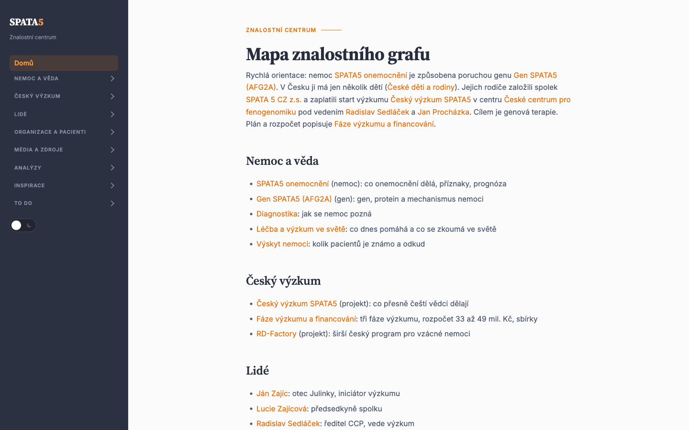
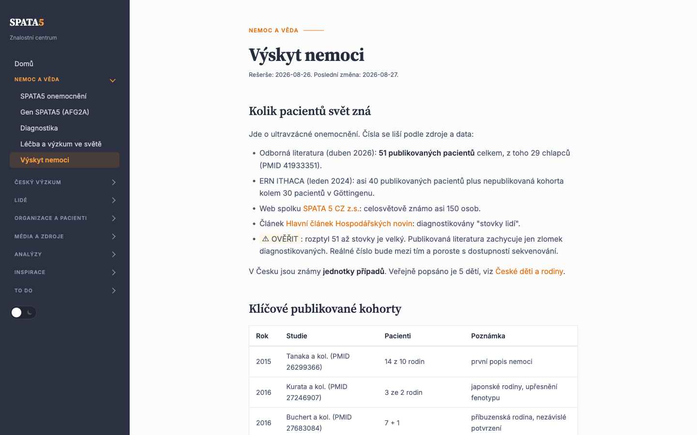
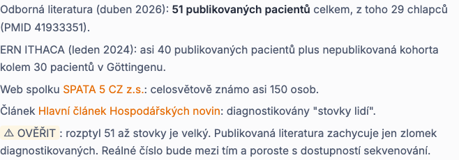
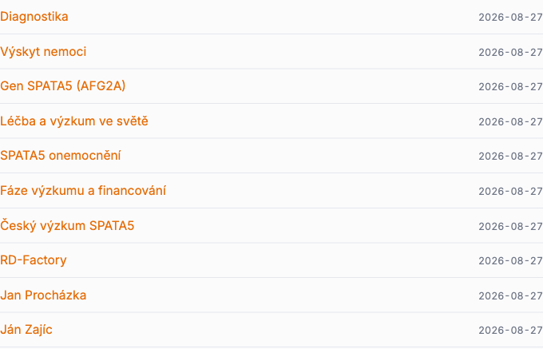

Tato příručka vysvětluje, jak je znalostní báze SPATA5 postavená a jak do ní přidat nebo upravit obsah. Není potřeba nic programovat. Stačí umět upravit textový soubor a spustit jeden příkaz.
Repozitář má dvě hlavní složky.
| Složka | Co v ní je | Kdo do ní sahá |
|---|---|---|
data/ | Všechny texty. Obyčejné soubory
.md, jeden soubor na jeden článek. |
Vy. Tady se píše a upravuje. |
web/ | Hotový web. Vygenerované stránky HTML. | Skript. Ručně se tu nic neupravuje. |
Mezi nimi stojí skript web/build.py. Přečte všechny
články ve data/ a vyrobí z nich web. Z každého článku
vznikne jedna stránka. Menu, odkazy mezi stránkami a seznam posledních
změn skript složí sám.
Aktuální verze webu je vždy uložená v repozitáři. Otevřete soubor
web/index.html v prohlížeči, například poklepáním. Nic se
neinstaluje a žádný server není potřeba.

data/, obsah stránky pochází z data/INDEX.md.Články leží ve složkách data/00-nemoc/ až
data/09-todo/. Například stránka „Výskyt nemoci" je soubor
data/00-nemoc/epidemiologie.md.
Soubor otevřete v libovolném textovém editoru nebo v Obsidianu. Píše se běžný text s několika značkami.
## Kolik pacientů je známo
Odborná literatura (duben 2026): **51 publikovaných pacientů**.
Podrobnosti shrnuje [[spata5-nemoc]].## je nadpis, **tučně** zvýrazní text a
[[spata5-nemoc]] vytvoří odkaz na jiný článek. Odkazuje se
jménem souboru bez přípony.
V kořenové složce repozitáře spusťte v terminálu:
python3 web/build.pySkript vypíše OK: 23 článků + index.html. Pak stačí
obnovit stránku v prohlížeči a změna je vidět.
Upravený soubor ve data/ a přegenerované soubory ve
web/ patří do jednoho společného commitu.

Složka určuje, ve které skupině menu se článek objeví.
| Složka | Skupina v menu |
|---|---|
00-nemoc | Nemoc a věda |
01-cesky-vyzkum | Český výzkum |
02-lide | Lidé |
03-organizace, 04-pacienti | Organizace a pacienti |
05-media, 06-zdroje | Média a zdroje |
07-ai | Analýzy |
08-inspirace | Inspirace |
09-todo | TO DO |
Každý článek začíná krátkou hlavičkou mezi --- a
nadpisem s #. Nadpis se stane názvem stránky.
---
id: novy-clanek
typ: tema
nazev: Nový článek
datum-reserse: 2026-08-27
---
# Nový článek
Text článku.
## Zdroje
- Popis zdroje. PMID 12345678.Každé tvrzení v článku musí mít zdroj v sekci Zdroje.
Do data/INDEX.md doplňte odkaz
[[novy-clanek]] do příslušné sekce. Podle pořadí v tomto
souboru se řadí položky v menu webu.
Znovu python3 web/build.py. Nová stránka i položka v
menu vzniknou samy. Commit obsahuje nový soubor ve data/
i vygenerované HTML.
Když si údajem nejste jistí, napište před něj ⚠ OVĚŘIT s poznámkou, odkud údaj pochází a co je potřeba dohledat. Web značku zvýrazní, takže čtenář vždy vidí, kde si nejsme jistí. Značky se nikdy nemažou bez ověření.

Skript při chybě skončí a napíše, co je špatně. Hlídá dvě věci.
[[...]] musí vést na existující soubor.
Při překlepu vypíše CHYBA: [[jmeno]] nikam nevede.Na úvodní stranu skript také sám doplní seznam deseti naposledy změněných článků.

Jen pro generování webu: Python 3.7 nebo novější a git. Nic dalšího. Pro čtení webu a úpravy textů nepotřebujete nic.
↑ Zpět na obsah